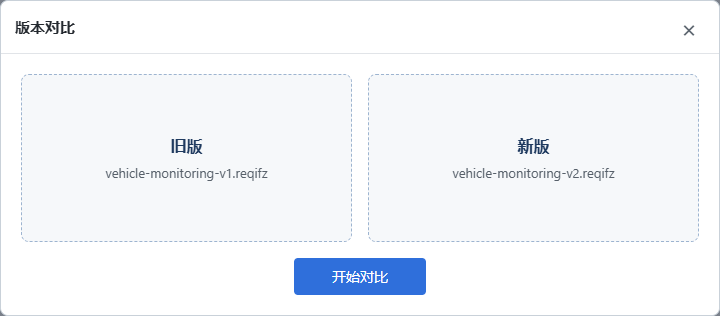
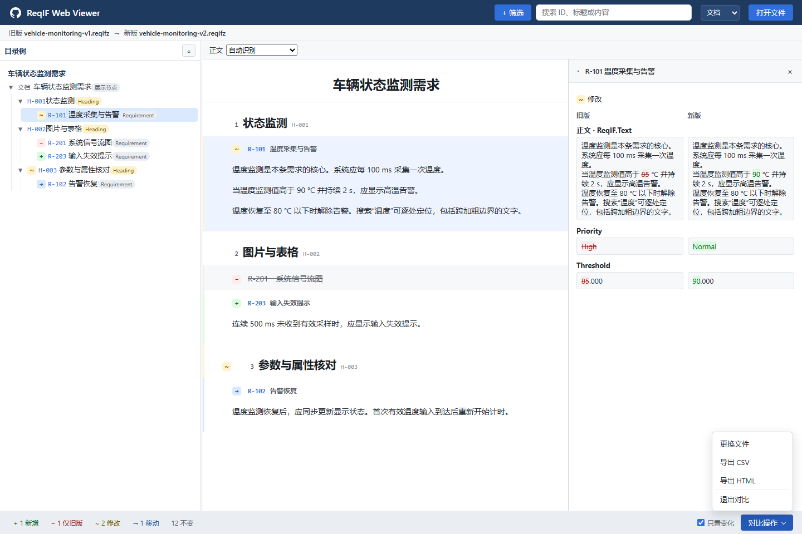
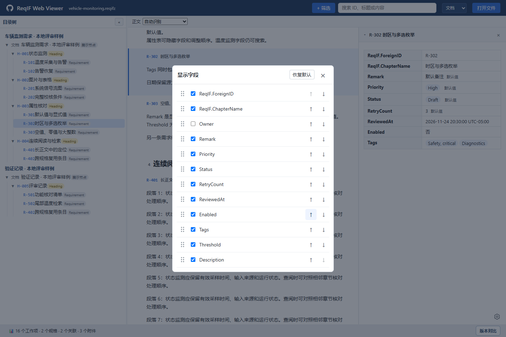
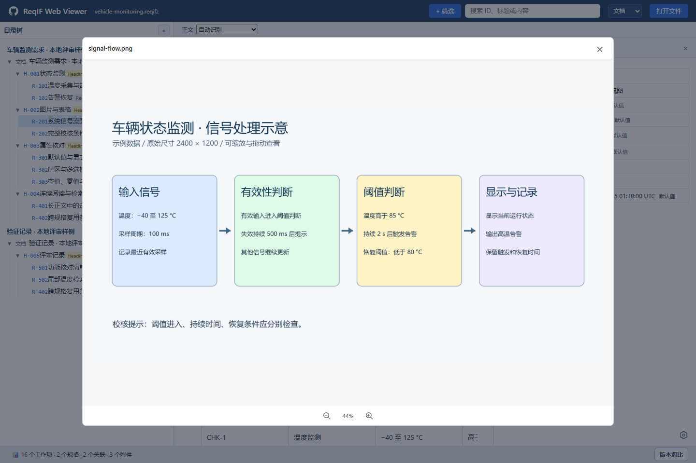

Document and work item views
Read specifications continuously in their original order, navigate from the tree, and inspect individual records. Select the field used as the document body.
Read and search requirements in local ReqIF and ReqIFz files, or compare two versions. Your files stay in your browser.

Requirements exchange files contain chapters, content, attributes, and attachments. Reviews call for continuous reading, while verification often starts with an ID or a keyword.
ReqIF Web Viewer combines document reading and work item details in one web page. Select a local file to begin, or download the source and open index.html for offline use.
Screenshots show the current viewer with illustrative Chinese vehicle-monitoring requirements. Select an image to view it at full size.
Read specifications continuously in their original order, navigate from the tree, and inspect individual records. Select the field used as the document body.
Search IDs, titles, and content with all or any keywords, then combine attribute filters. Highlight body matches, see the count, and move to the previous or next occurrence.
Use the gear in the work item panel to choose and reorder fields. Attribute tables mark inherited defaults and preserve source time zones.
Filter additions, older-only items, edits, and moves. Compare values side by side and export a CSV or an offline HTML report.
Images open fitted to the window, with zoom controls, wheel zoom, and drag panning. Scroll wide tables within the document and download other attachments on click.
Follow incoming and outgoing relations. Counts use the source objects, count repeated references once, and handle added document titles as display nodes.
Select an older and a newer file, then filter by status. Open an item to compare its text, attributes, and position. Export CSV or HTML from the bottom-right menu.


This example searches for temperature and filters for High or Normal priority. Results show the matched field, excerpt, and chapter path. Open an item to step through matches in the body.

Original field names and value tooltips remain available, with display settings inside the work item panel.


Close image and settings windows with the cross or a click outside. Reading controls stay close to the content.


A work item referenced by multiple specifications is counted once. Document titles added from specification names are marked as display nodes, while work item and type totals use objects from the file.
The window also lists specifications, relations, and attachments. This example contains 16 work items, including 5 Heading and 11 Requirement objects.

Online use requires no runtime installation. Select your local file again whenever you return to the viewer.
Visit the tool and use Open file, or drag a file onto the page.
A ReqIFz archive should contain one ReqIF document and may include images and other attachments.
Use the tree, search, filters, or relations to locate a requirement and switch between the two views.